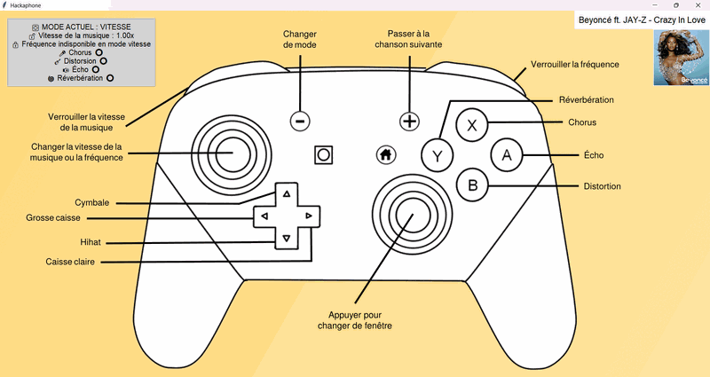
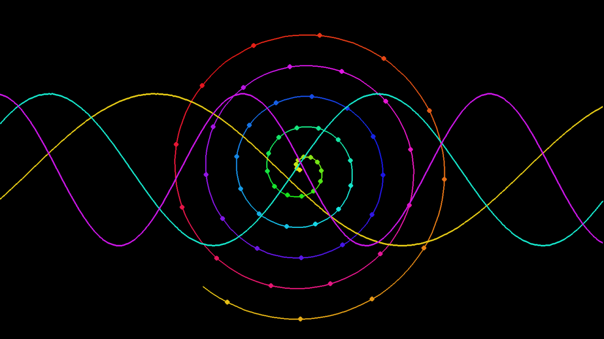
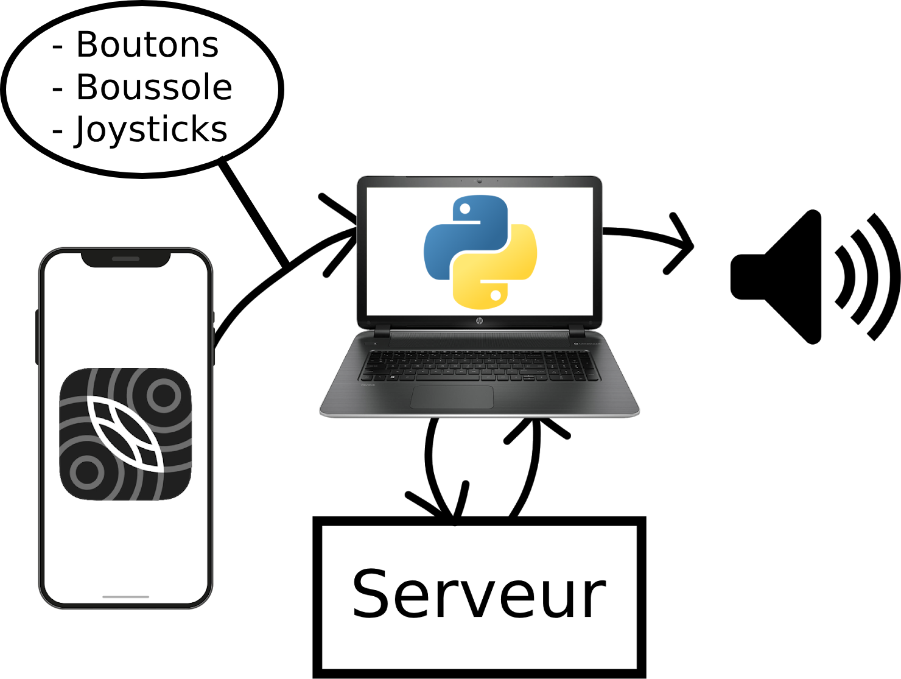

Interface graphique du méta-instrument avec une manette Bluetooth
Objectifs
Notre but est de développer un méta-instrument (outil d'interaction musicale permettant de contrôler un rendu musical informatique) pour la performance musicale. Ce dernier peut être contrôlé par un téléphone portable ou une manette Bluetooth. Voici les principaux objectifs du projet :
- Capturer le mouvement d'un téléphone via des données OSC (Open Sound Control) vers un ordinateur
- Modification en temps réel de la vitesse d'une musique
- Application d'effets audios et de sons qui permettent de renforcer l'aspect artistique de la musique
- Une interface graphique visuelle pour comprendre à quoi correspondent les différents effets et comment les activer
- Une visualisation colorée et synchronisée par rapport à la musique en temps réel

Visualisation colorée et synchronisé avec la musique en cours de lecture
Outils et moyens
Concernant les outils que nous avons utilisés durant le projet, ils sont plusieurs et nous avons pu toucher à tout :
- Nous avons commencé en utilisant le logiciel Pure Data pour la génération sonore
- Sur téléphone, ce sont des applications mobiles telles que Mrmr OSC Controller Data OSC pour l'envoi des données du téléphone à l'ordinateur
- Nous avons baculé sur Python au détriment de Pure Data pour sa plus grande facilité d'accessibilité, avec notamment la bibliothèque
pyopour le traitement audio - Nous avons aussi utilisé la bibliothèque matplotlib de Python pour l'analyse graphique et la visualisation
- Enfin, au niveau matériel, nous avons utilisé une manette Switch Pro pour son ergonomie et sa précision

Schéma de principe d'envoi des données OSC
Résultats
Produit proposé
Aujourd'hui, nous proposons un méta-instrument disponible sur téléphone portable et sur manette Bluetooth. Celui-ci s'applique à une musique jouée en temps réel et a les fonctionnalités suivantes :
- Modification de la vitesse d'une musique jouée en temps réel
- Application d'un filtre passe-bande sur la musique pour garder les basses ou hautes fréquences de la musique
- Application d'effets à la musique (chorus, distorsion, écho et réverbération)
- Possibilité de passer à la musique suivante
- Passage à la musique suivante lorsque la musique se termine (adaptation en temps réel en fonction de sa vitesse de lecture)
Les fonctionnalités ci-dessus s'appliquent au méta-instrument sur téléphone portable. La version sur manette Bluetooth possède ces ajouts ainsi que ceux-ci :
- Possibilité de jouer des sons de batterie par dessus la musique (grosse caisse, caisse claire, cymbale et hi-hat)
- Blocage de la vitesse de la musique ou de sa fréquence à l'aide de boutons
- Changement de fenêtre pour voir la visualisation de la musique jouée simplement en appuyant sur un joystick
Tests utilisateurs
Nous avons fait passer des tests utilisateurs concernant le méta-instrument sur téléphone ainsi que sur manette Bluetooth. Nous avons souhaité connaître l’avis de personnes afin de savoir si le projet était accessible et fun à utiliser. 5 personnes se sont portées volontaires pour ces tests. Voici un résumé des résultats qui sont ressortis :
- 100 % jugent l'interface manette facile à prendre en main
- 80 % des personnes reconnaissent une immersion totale sur manette contre 40 % sur mobile
- 100 % des personnes recommandent la manette pour sa précision et son intuitivité
Gestion de projet
Notre équipe
L'équipe Hackaphone s'est constituée au début du mois de septembre 2024 autour de quatre membres : Jolan Mazouffre, Charlotte Nickerson, Baptiste Pawelczyk et Alyaa Saab. Nous avons choisi de répondre à une proposition de projet soumise par notre client, Maxime Poret. Cette initiative s'inscrit dans une démarche transdisciplinaire, rassemblant quatre élèves-ingénieurs aux parcours académiques variés :
- Jolan Mazouffre : formation en classe préparatoire filière PSI
- Charlotte Nickerson : Master en informatique, spécialisation en interaction homme-machine
- Baptiste Pawelczyk : formation en classe préparatoire filière PC
- Alyaa Saab : formation en classe préparatoire filière PC
Méthode de travail
Notre approche méthodologique variait en fonction de la nature des tâches à accomplir. Pour les tâches simples ou de faible envergure, nous procédions à une répartition équitable afin de travailler en autonomie. Chaque membre informait ensuite le reste de l'équipe dès qu'une tâche était achevée ou avait franchi une étape importante, assurant ainsi une transparence constante sur l'avancement global du projet.
À l'inverse, pour les tâches plus complexes ou fastidieuses, nous privilégions un travail en collaboration directe. Cette organisation nous permettait non seulement de garantir une bonne cohésion et compréhension mutuelle, mais aussi d'optimiser notre efficacité collective.
Répartition du travail
Aucun rôle fixe n'a été attribué au sein de l'équipe. Les tâches ont été réparties en fonction des préférences individuelles et des compétences de chacun, favorisant ainsi l'engagement et la complémentarité des membres dans la réalisation du projet.
Organisation et planification
Notre projet consistait à élaborer un méta-instrument (outil d'interaction musicale permettant de contrôler un rendu musical informatique) pour la performance musicale. Les différentes étapes qui nous ont permis de réaliser notre travail ont été décidées ensemble au fur et à mesure que l'on avançait dans le projet.
Ainsi nous avons d'abord effectuer un état de l'art, ensuite nous nous sommes entretenus avec notre client pour mieux connaître les besoins du projet, puis sur la base de ces informations nous avons pu développer au mieux les attentes demandées. Enfin nous avons fait des tests utilisateurs et ajusté le projet en fonction des retours obtenus.
Difficultés rencontrées
Nous avons rencontré plusieurs obstacles, notamment dans la recherche d'utilisateurs pour les tests, où nous espérions en avoir plus.
Au début du projet, nous avions aussi l'intention de faire des tests auprès de musiciens expérimentés. Cette accès ne s'est révélé au final pas nécessaire car ce projet a plus un but "grand public" cherchant à toucher les gens plutôt débutants et non experts dans le domaine de la musique, ce qui leur permet ainsi de devenir DJ sans fournir beaucoup d'efforts.
Enfin, la gestion de l'interdisciplinarité a demandé un effort constant de coordination entre exigences techniques et objectifs artistiques.
Matrice des risques
| Référence | Risque | Impact | Gravité | Probabilité | Niveau |
|---|---|---|---|---|---|
| R1 | Portabilité du code sur une autre plateforme (macOS, Linux) | Bibliothèques propres à Windows non compatibles | Indésirable | Probable | Haut |
| R2 | Portabilité du code pour une utilisation sur Android (avec OSC Controller) | Le code avec des adresses OSC erronées | Tolérable | Possible | Moyen |
| R3 | Obsolescence du protocole Open Sound Control (OSC) | Le code en lui-même | Indésirable | Improbable | Haut |
Planning
À FAIRE
Acquis pédagogiques
Au cours du projet, nous avons été amenés à développer des compétences techniques et méthodologiques nous permettant d'aborder la conception d'un instrument de musique doté d'une interface interactive intégrant des dimensions sonores. Nous avons mis à profit l'interdisciplinarité du projet et appris à être autonomes, tout en développant notre créativité artistique en tenant compte de l'expérience utilisateur. Du point de vue des compétences spécifiques, les voici :
- Conception et prototypage d'une interface permettant de jouer avec le son en temps réel
- Usage avancé du protocole OSC et des bibliothèques audio de Python
- Création de visualisations qui répondent à de la musique en temps réel
- Gestion de projet transdisciplinaire
Développement Durable & Responsabilité Sociétale & Environnementale
Dans le cadre du respect des exigences environnementales du Plan Vert et de la loi Grenelle, notre équipe a pris plusieurs mesures concrètes afin de minimiser l’empreinte écologique de notre projet et du site ici présent.
Nous avons optimisé la taille des images afin de réduire la consommation énergétique liée à leur chargement et aux transferts de données, contribuant ainsi à limiter l’impact des infrastructures numériques.
Par ailleurs, nous avons appliqué les principes du Green Coding : notre code a été rédigé de manière efficace et épurée, afin d’alléger le poids des pages et de limiter la sollicitation des ressources matérielles.
Sur le plan des enjeux sociaux, nous avons veillé à concevoir une interface accessible, incluant un contraste adapté pour la lisibilité ainsi que des alternatives textuelles aux éléments visuels, permettant à l’ensemble des utilisateurs, y compris ceux en situation de handicap, de naviguer sur le site dans les meilleures conditions.